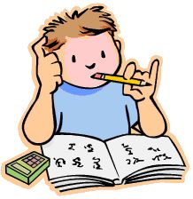

As a freshman, Stevens students take roughly 17 credits in the first semester.
Computer Science majors all take the same classes with varying difficulties.
A student who took APs in highschool can choose to start in a higher level of certain courses
The typical first semester Computer Science classes are as follows...
CAL 103
CAL 103 is a required english course that all freshman must take. In CAL 103, students are empowered with the written and oral communications skills essential for both university-level academic
discourse as well as success outside Stevens in the professional world.
MA121-MA124

MA 121, 122, 123 and 124 are the first mathematics courses you take at Stevens. These first mathematics classes are known as the "calculus sequence."
The courses last half a semester and cover calculus, becoming more advanced from differential calculus to calculus with two variables.
Each class is explained in the following list below:
MA 121: In MA 121, you will learn the concepts of diffeerential calculus. This includes topics like derivatives on inverse functions, implicit differentiation, linear approximation, L'Hopital's Rule, and optimization theory.
MA 122: In MA 122, you will generally study the theory of integration. This includes Riemann sums, the fundamental theorem of calculus, and other important parts of the subject including integration techniques widely used in geometry and physics.
MA 123: In MA 123, you will study Series, Vectors, and Multivariable Functions. More specifically, you will beging learning taylor polynomials and taylor series while moving onto analysis of infinite series and the fundamental notion of convergence. Functions of multiple variables are also introduced going into the next and last calculus class.
MA 124:Finally, in the last calculus class, MA 124, you will study Multivariable Calculus. Some of the topics that are covere include partial derivatives, tangent plane approximation, the gradient vector, and optimization in dimensions two and three. The theory of integration is also extended here.
PEP 111
PEP 111, or Mechanics, is the required science for Computer Science majors in the first semester.
Students in PEP 111 have lectures twice a week and one hour and a half long recitation where they work through
problems taught in the lectures. Throughout the semester, there will be around 5 quizzes. Study a lot for these quizzes
if you don't feel comfortable with the content.
CS146
CS 146 is one of two Computer Science course you will take in your first semester. This course is taught by Professor Iraklis Tsekourakis (fun fact, his name is
Greek for Hercules, so you can call him that.) In CS 146, you will gain introductory knowledge into how the internet works and how accessing websites on
internet truly work. Alongside this, you will also be working with a randomized team throughout the entire semester to create a website (such as this one)
in HTML, CSS, and Javascript which you will learn in the second half of the semester.
CS115
CS115 is the second Computer Science course you will take in your first semester. THe course is called, "Introduction to Computer Science", where you
will gain introductory knowledge into Computer Science through programming in a straightforward and easy going programming language called, Python. In this
class, you will learn how to create programs using loops, recursion, and object oriented programming. In this class, there are 3 tests throughout the entire Semester
where you are allowed a "cheat sheet" (a page of notes front and back) to use on the tests. We highly recommend utilizing this because not only is it a page
of notes you can use on the class, it also realy helps you study to the point hwere you may not even need to use the cheat sheet.
For more information on the different courses, click here